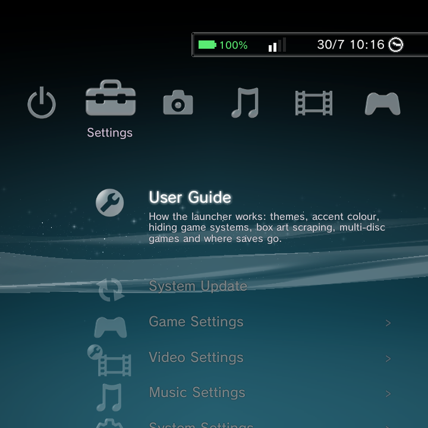
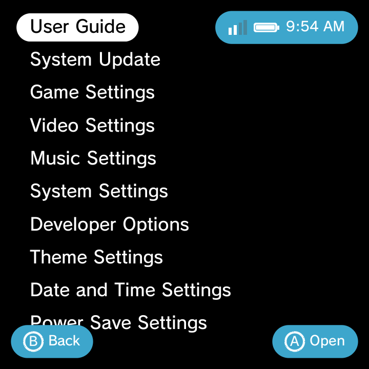
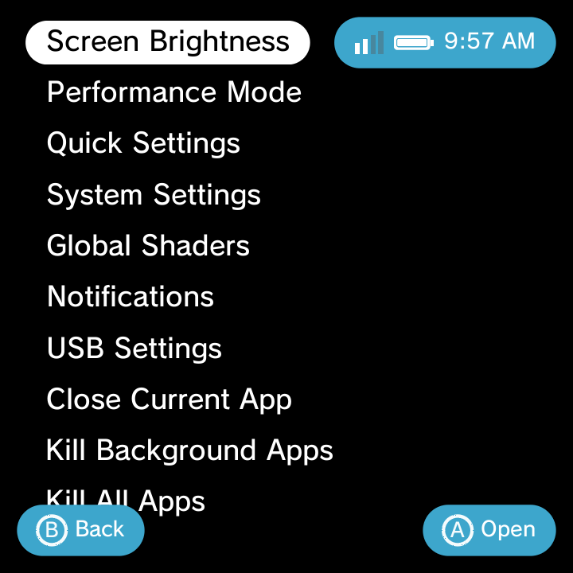

Everything you can tweak in GammaOS Nano lives in one place: the Settings category. This page walks the whole tree top to bottom, so you always know where a given option lives and what it does.
You can open Settings two ways:
- From the home screen, move to the Settings category and open the row you want.
- From anywhere, hold Power to bring up the Quick Menu, then choose System Settings.
The Settings screen adapts to whichever home theme you are using. It looks like a PlayStation-style list on XMB and a clean text list on Minima, but the rows and options are the same.

Settings category

same Settings, minimal look
Want the fastest way to change screen brightness? You do not need Settings at all. Just hold Select and press Vol + or Vol - from anywhere.
Top of the tree
| Row | What it does |
|---|---|
| User Guide | A built-in how-to for the launcher. |
| System Update | Install a system update over the air or from USB. |
Game Settings
Controls your game library. See Adding Games, Game Systems, and Boxart for full walkthroughs.
| Option | What it does |
|---|---|
| Rescan Games | Re-scan your ROM folders after adding or removing files. |
| Boxart Scraper | Download cover art and metadata (see below). |
| Game Systems | Enable, disable, reorder, and edit every game system. |
Game Systems editor
Opening Game Systems lists every system with an On/Off toggle. Reorder systems with L1 and R1. Open a system to edit these fields:
- Display Name and Short Name
- Launch Type (Libretro Core or Custom Package)
- Emulator (a searchable core or app picker)
- Core .so, Package, Intent Template, Launch Args
- Extensions (comma-separated file types this system accepts)
- Scan Folders (a folder picker, or the default
ROMs/<id>/) - Icon (a grid of icons or a custom PNG) and Icon Tint (21 swatches or a custom RGB colour)
- A per-system Scraper with optional username and password, plus Scrape This System
- Reset-to-Default for built-in systems, or Delete for custom ones
To add a system that is not in the list, use Add New System... at the bottom. Full steps are on the Custom System page.
Boxart Scraper
| Option | Default | What it does |
|---|---|---|
| Scraper service | ScreenScraper | Choose ScreenScraper or TheGamesDB. |
| Replace Icons with Boxart | On | Show downloaded covers instead of system icons. |
| Hover Background Art | On | Show fanart behind the highlighted game. |
| Scrape Region | - | Preferred region for the art. |
| Overwrite Existing | Off | Re-scrape games that already have art. |
| ScreenScraper account | blank | Optional username and password (built-in credentials are used if blank). |
| TheGamesDB API key | - | Your own key for TheGamesDB. |
| Scrape All Systems | - | Kick off a full-library scrape. |
Art is cached on the device and a background thread keeps scraping while you are idle. See Boxart for the full guide.
Video and Music Settings
These two rows control the streaming browsers in the media players.
Video Settings
| Option | Default | What it does |
|---|---|---|
| IPTV Channels | On | Show the live-channel (IPTV) browser in Video. |
| IPTV Playlist URL | - | Point IPTV at your own playlist. |
Music Settings
| Option | Default | What it does |
|---|---|---|
| Internet Radio | On | Show the Internet Radio browser in Music. |
| Radio Playlist URL | - | Point Internet Radio at your own playlist. |
System Settings
| Option | What it does |
|---|---|
| System Name | Set the name shown for this device. |
| System Language | Pick your language, with a live preview across many languages. |
Developer Options
For power users and debugging. Leave these off unless you know you need them.
| Option | What it does |
|---|---|
| USB Debugging | Enable adb over USB. |
| Stay Awake While Charging | Keep the screen on while plugged in. |
| Show Touches | Draw a dot where you touch the screen. |
| Pointer Location | Overlay touch coordinates and tracks. |
| Transition / Window / Animator scales | Speed up or slow down system animations. |
Theme Settings
The heart of the launcher's look. See the Themes page for the full tour.
| Option | What it does |
|---|---|
| Home Theme | Switch between GammaOS XMB, DSi Menu, and Minima (applying restarts the home). |
| Colour | Accent colour, 21 options including each theme's Original. |
| Background | XMB background style (Original / Classic / Wallpaper). |
| Wallpaper and Wallpaper Image | Pick a photo for the home background. |
| Bottom Wallpaper | A separate wallpaper for the bottom screen (dual-screen devices). |
| Video Wallpaper | A looping video for the top-screen background. |
| Clear Wallpaper | Remove a custom wallpaper and restore the wave. |
| Background Colour | A solid colour for the Minima background. |
| Wallpaper Dimming | Darken a bright wallpaper so text stays readable (default 25%). |
| XMB Wave | Turn the PS3 wave on or off (auto-off when a wallpaper is set). |
| Font | XMB font style (Original / Rounded / Pop). |
| Day/Night | XMB lighting (Auto / Day / Morning / Dusk / Evening / Night; default Night). |
| Bottom Clock | Turn the bottom-screen clock on or off (dual-screen devices). |
| Bottom Clock FPS | 30 or 60 frames per second for the clock. |
| Home Categories | Reorder or hide the home categories (Settings, Photo, Music, Video, Game, Network) with L1 and R1. |
Date and Time Settings
| Option | What it does |
|---|---|
| Set via Internet (NTP) | Sync the clock over the network. |
| Set Manually | Type in the date and time yourself. |
| Date Format | Choose how dates are shown. |
| Time Format | 12-hour or 24-hour clock. |
| Time Zone | Pick your zone. |
| Daylight Saving | Toggle daylight saving. |
Power Save Settings
| Option | What it does |
|---|---|
| Battery Saver | Reduce performance and background activity to stretch battery life. |
Accessory Settings
| Option | What it does |
|---|---|
| Manage Bluetooth Devices | Pair and manage Bluetooth controllers, headsets, and other accessories. |
Gamepad Settings
Tune how your controller behaves across the whole system. For the button map itself, see OS Controls.
| Option | What it does |
|---|---|
| Controller Enable | Turn controller input on or off. |
| Merge Controllers | Combine multiple pads into one virtual controller. |
| Hide Source Device | Hide the raw input device from apps. |
| ABXY Swap | Swap the face-button layout. |
| Invert Left / Right Stick | Flip axis direction per stick. |
| Analog-to-D-Pad | Let the analog stick act as a D-Pad. |
| D-Pad-to-Analog | Let the D-Pad act as an analog stick. |
| Global Sensitivity | Overall stick sensitivity. |
| PWM (rumble) Enable + Intensity | Turn rumble on and set its strength. |
| D-Pad Threshold | How far the stick must move to register as a D-Pad press. |
| Screen Map | Map a stick to on-screen touch coordinates. |
| Mouse Mode | Stick or D-Pad pointer speed, boost, and scroll (see Mouse and Keyboard). |
Slide Behaviour
For devices with a slide, swivel, or hall (lid) switch. Configure what happens when you open or close.
| Option | What it does |
|---|---|
| Enable | Turn slide handling on. |
| Device / Button Code / Event Type / Active Value | Tell the system which hardware switch to watch. |
| On Slide Down / On Slide Up | Choose an action: Rotate, Sleep, Wake, Launch, or PSP Clock. |
| Sleep delay | How long before sleeping after a slide. |
| Rotation angle | Angle to rotate the screen on a slide. |
| Launch target | App to open on a slide (with the Launch action). |
| Show clock on slide and Live backdrop | Visual extras for the slide. |
| Parallax calibration | Fine-tune the motion effect. |
Display Settings
| Option | What it does |
|---|---|
| Brightness | Screen brightness (or use Select + Vol + / Vol - anywhere). |
| LiveDisplay | Night Light and temperature, colour calibration, saturation, and reading mode. |
| Screen Saver | Configure the screen saver. |
| Screen Timeout | 15 seconds up to Never. |
| Font Size | Make system text larger or smaller. |
| Dark Theme | System dark mode. |
| Screen Orientation / Force Orientation | Set or lock the screen orientation. |
Sound Settings
| Option | What it does |
|---|---|
| Touch Sounds | Play a sound on touch. |
| Charging Sounds | Play a sound when charging starts. |
| Screen Lock Sounds | Play a sound on lock and unlock. |
Network Settings
Your connections live here. See Network and Network Shares for the full guides.
| Option | What it does |
|---|---|
| Connection status list | See your SSID, IP address, and signal. |
| Internet Connection | Turn networking on or off. |
| Internet Connection Settings | The Wi-Fi and Bluetooth setup wizard (pick an SSID, enter a WPA2 password, pair devices). |
| Internet Connection Test | Check that you are really online. |
The top bar (HUD) shows your Wi-Fi signal and Bluetooth status at a glance.
Tools and extras (their own rows)
These rows open dedicated tools rather than a simple list of toggles.
| Row | What it is |
|---|---|
| GammaOS Toolbox | Power-user tweaks: performance, display, audio, swap, the RetroArch Back Button, and more. |
| GammaRGB | RGB LED lighting: effect (Off / Follow Screen / Solid / Effect 1-5), colour, brightness, scale-with-brightness, speed, saturation, fade, split zones with per-zone colours. |
| GammaEQ | Speaker EQ and enhancements: master enable, speaker-only, preview, preamp and postgain, Crystalizer, Bass Limiter, Mid Protector, Stereo Widener, and two parametric EQ bands. |
| File Explorer | Browse and manage the files on your device. |
| Network Shares | Connect SMB, NFS, WebDAV, and FTP shares. |
Quick Menu
Hold Power on the home screen (or use its home shortcut) to open the Quick Menu without leaving what you are doing.

The Quick Menu includes:
- Screen Brightness slider
- Performance Mode
- Quick Settings tiles
- System Settings (jump into the full Settings app)
- Global Shaders
- Notifications
- USB Settings (adb / mtp / rndis / off)
- Close / Kill Apps
- A Power submenu (Reboot / Shutdown / Recovery / Safe Mode / Android Settings)
If a screen shader ever makes the display unreadable, hold Power + Select together to disable the system display shader. This is the emergency escape hatch.